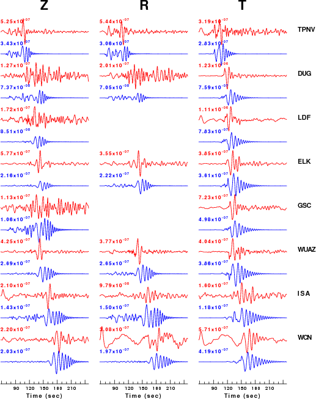
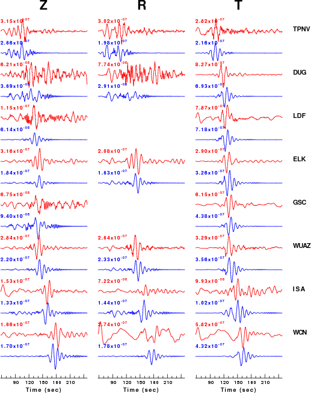
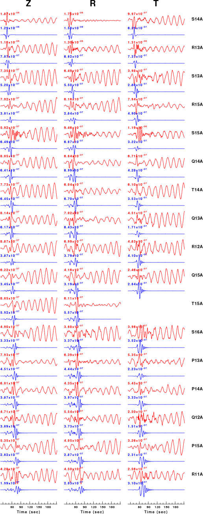
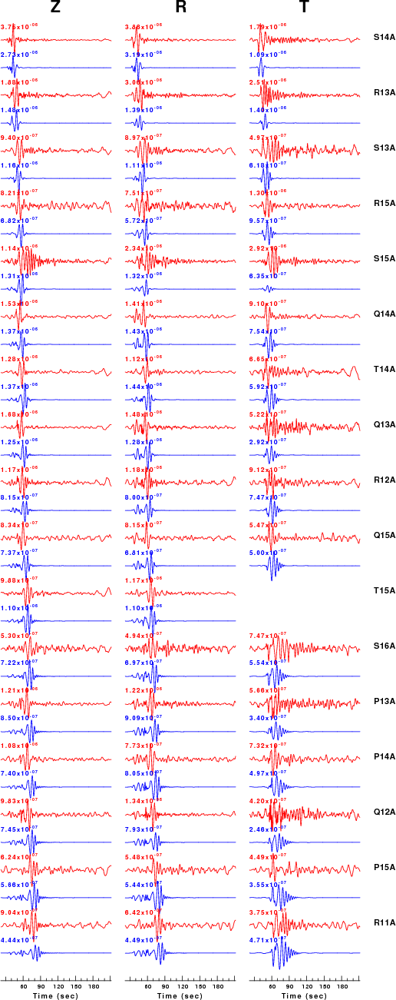
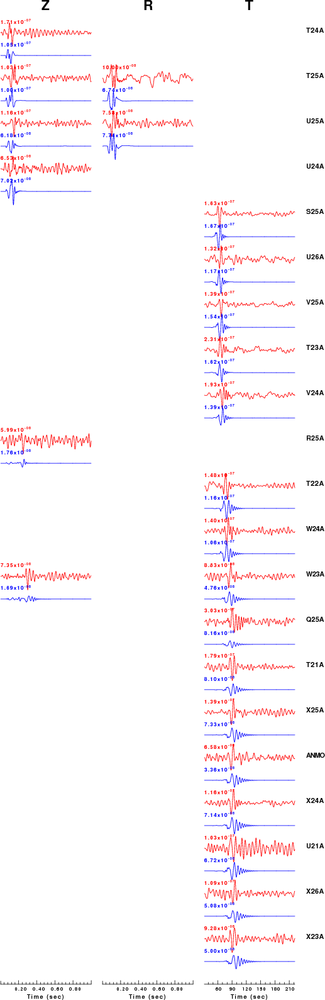
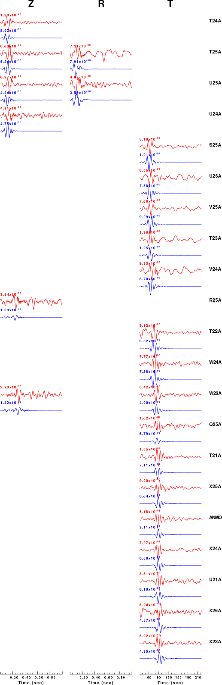

The purpose of this display is to show the effect of a rejection filter on the processing. I consider events for which moment tensors have been obtained. I compare the ground velocities bandpass filtered in the 0.02 - 0.10 Hz band on the left to those filtered with a rejection filter. The purpose of the filtering is to provide a simple waveform for inversion. At times the regional signal is affected by microseisms with frequency of about 0.16 Hz or by teleseismic surface waves with frequency of about 0.05 Hz. Coherent noise is typically a problem with small events. The reason that we want a simple waveform for the inversion is avoid the time shift operation of the inversion code latching onto the wrong peak.
We consider the following earthquakes:
In this comparison I use a standard time window of 10 seconds before
predicted/observed P and 150 seconds after. In the actual inversion
this window was mad much shorter to degradation of the goodness of fit
parameter because of the post-signal noise.
The processing of the Nevada event is found at http://www.eas.slu.edu/eqc/eqc_mt/MECH.NA/20070806055945/index.html
SLU Moment Tensor Solution
2007/08/06 05:59:45 37.811 -114.433 5.0 4.1 Nevada
Best Fitting Double Couple
Mo = 8.04e+21 dyne-cm
Mw = 3.87
Z = 8 km
Plane Strike Dip Rake
NP1 14 82 145
NP2 110 55 10
Principal Axes:
Axis Value Plunge Azimuth
T 8.04e+21 30 326
N 0.00e+00 54 183
P -8.04e+21 18 67
Moment Tensor: (dyne-cm)
Component Value
Mxx 3.01e+21
Mxy -5.39e+21
Mxz 2.00e+21
Myy -4.32e+21
Myz -4.10e+21
Mzz 1.31e+21
############--
################------
###################---------
##### ############----------
####### T ############------------
######## ###########--------------
#######################---------- --
-#######################---------- P ---
-######################----------- ---
---#####################------------------
-----##################-------------------
------#################-------------------
--------##############--------------------
----------###########-------------------
-------------#######--------------------
----------------###-----------------##
-----------------######------#######
----------------##################
-------------#################
-----------#################
-------###############
--############
Harvard Convention
Moment Tensor:
R T F
1.31e+21 2.00e+21 4.10e+21
2.00e+21 3.01e+21 5.39e+21
4.10e+21 5.39e+21 -4.32e+21
| Standard Filter | Microseism Rejection Filter |
|  |
 |
| Filter: hp c 0.01 n 3 lp c 0.10 n 3 |
Filter: hp c 0.01 n 3 lp c 0.10 n 3 br c 0.12 0.25 n 4 p 2 |
The processing of this earthquake is documented at http://www.eas.slu.edu/eqc/eqc_mt/MECH.NA/20070818131630/index.html
SLU Moment Tensor Solution
2007/08/18 13:16:30 38.07 -113.31 7.0 3.9 Utah
Best Fitting Double Couple
Mo = 3.76e+21 dyne-cm
Mw = 3.65
Z = 9 km
Plane Strike Dip Rake
NP1 65 75 -75
NP2 199 21 -134
Principal Axes:
Axis Value Plunge Azimuth
T 3.76e+21 28 143
N 0.00e+00 14 241
P -3.76e+21 57 355
Moment Tensor: (dyne-cm)
Component Value
Mxx 7.71e+20
Mxy -1.30e+21
Mxz -2.96e+21
Myy 1.04e+21
Myz 1.10e+21
Mzz -1.82e+21
#######-------
######----------------
######----------------------
#####-------------------------
#####-----------------------------
#####----------- -----------------
#####------------ P -----------------#
#####------------- ----------------###
####-------------------------------#####
#####----------------------------#########
####---------------------------###########
####------------------------##############
####--------------------##################
###----------------#####################
####----------##########################
###---################################
---####################### #######
---###################### T ######
--##################### ####
--##########################
-#####################
##############
Harvard Convention
Moment Tensor:
R T F
-1.82e+21 -2.96e+21 -1.10e+21
-2.96e+21 7.71e+20 1.30e+21
-1.10e+21 1.30e+21 1.04e+21
| Standard Filter |
Teleseismic Surface Wave Rejection |
|  |
 |
| Filter: hp c 0.02 n 3 lp c 0.10 n 3 |
Filter: hp c 0.05 n 3 lp c 0.15 n 3 br c 0.045 0.055 n 4 p 2 |
The solution for this earthquake is to be found at the link
http://eqinfo.eas.slu.edu/Earthquake_Center/MECH.NA/20090501013358/index.html
USGS/SLU Moment Tensor Solution
ENS 2009/05/01 01:33:58:0 36.85 -104.78 5.0 3.5 New Mexico
Stations used:
IU.ANMO TA.Q25A TA.R25A TA.S25A TA.T21A TA.T22A TA.T23A
TA.T24A TA.T25A TA.U21A TA.U24A TA.U25A TA.U26A TA.V24A
TA.V25A TA.W23A TA.W24A TA.X23A TA.X24A TA.X25A TA.X26A
Filtering commands used:
hp c 0.02 n 3
lp c 0.10 n 3
br c 0.12 0.25 n 4 p 2
Best Fitting Double Couple
Mo = 6.24e+20 dyne-cm
Mw = 3.13
Z = 8 km
Plane Strike Dip Rake
NP1 185 85 20
NP2 93 70 175
Principal Axes:
Axis Value Plunge Azimuth
T 6.24e+20 18 51
N 0.00e+00 69 198
P -6.24e+20 10 317
Moment Tensor: (dyne-cm)
Component Value
Mxx -1.02e+20
Mxy 5.78e+20
Mxz 3.26e+19
Myy 6.46e+19
Myz 2.14e+20
Mzz 3.70e+19
--------######
------------##########
------------#############
- P -----------###############
--- -----------############ ##
------------------############ T ###
-------------------############ ####
-------------------#####################
-------------------#####################
--------------------######################
#-------------------######################
###-----------------######################
########-----------####################---
###############---############----------
##################----------------------
#################---------------------
################--------------------
###############-------------------
#############-----------------
############----------------
#########-------------
#####---------
Global CMT Convention Moment Tensor:
R T P
3.70e+19 3.26e+19 -2.14e+20
3.26e+19 -1.02e+20 -5.78e+20
-2.14e+20 -5.78e+20 6.46e+19
| Standard
Filter |
Microseism
Reject filter |
|  |
 |
| Filter: hp c 0.02 n 3 lp c 0.10 n 3 |
Filter: hp c 0.02 n 3 lp c 0.10 n 3 br c 0.12 0.25 n 4 p 2 |